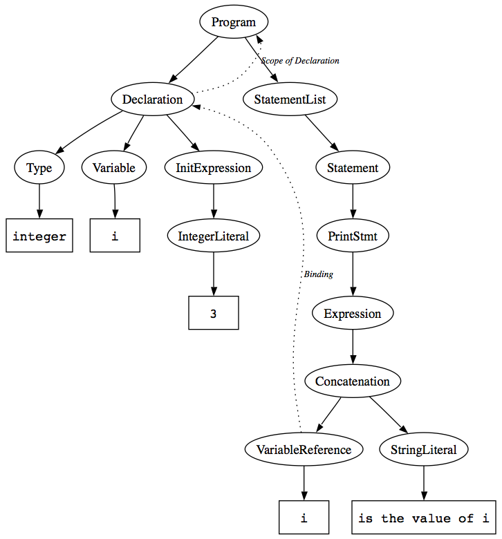

Jeff Overbey • July-August 2007
In source-to-source program transformation systems, it is common to represent programs as abstract syntax trees (ASTs) with "extra" edges between nodes. For example, an AST node representing the use of a variable i might have an edge pointing to the declaration of i. A subclass might have a different kind of edge pointing at its superclass. Edges can also be used to describe dependencies, data flow, control flow, and many other properties. An AST with these "extra" edges is called a program graph.
Consider the following program in a fictitious programming language.
program integer i = 3 print i + " is the value of i" end program
A program graph might look like the following. The nodes and solid edges comprise the AST; rectangular nodes represent tokens in the source program. The "extra" edges--the edges that make it a program graph rather than just an ordinary AST--are labeled and dotted.

This program graph has two types of edges.
Now, consider how this graph can be used.
Often, program graphs only conceptual: "Real" programs can be extremely large, spanning hundreds of files, and edges may span across these files. For example, a function defined in one file may be used in another, so a binding edge would span across files. Of course, it is inefficient--and sometimes impossible--to store ASTs for several hundred files in memory. Therefore, most systems cache information about externally-visible declarations in a program database. It becomes the programmer's responsibility to parse individual files and to distinguish what is available the program database from what is available in the AST.
The bz.over.vpg package serves as a basis for implementing virtual program graphs, which hide parsing and database access from the programmer. Essentially, the programmer can pretend that an AST for the entire (several-hundred-file) program is available in memory.
In this section, we will describe how a virtual program appears to work according to someone who is using it to write a refactoring or implement a search feature in an IDE, etc. In other words, this is its external interface, the interface seen by people who need to do program analyses.
To a user, the VPG itself appears to have only two capabilities:
When used properly, the real benefit of a VPG is the methods that can be added to AST nodes. In the example VPG in the picture above, for example,
Again, it is important to remember that the returned node does not have to be in the same file. For example, getAllReferences() could return a list of all of the references to that variable, even if they span hundreds of files. (Of course, it does not have to load hundreds of ASTs into memory to do this!)
This section describes how methods on AST nodes (such as the ones in the bulleted list above) are actually implemented. (If you are simply using a VPG, there is no reason to read this section: If a VPG is implemented well, all of this should be hidden from you.)
VPGs contain a number of methods that are not visible to ordinary users of VPGs: They are intended to be used only for implementing user-visible methods on AST nodes, such as the ones described above.
Recall that a program graph is just an AST with extra edges. A VPG contains edges, but it also contains dependencies and annotations.
All of the edges, dependencies, and annotations are stored on disk in a VPG Database.
A TokenRef is just a simple object with three fields:
Since edges point from one AST node to another, annotations are associated with a particular AST node, and both edges and annotations are stored on disk, there needs to be some concise way to describe AST nodes. This is the purpose of a TokenRef.
As the name implies, TokenRefs are actually suitable for uniquely identifying particular tokens in an AST. Although it should be hidden from the user of a VPG, the edges and annotations in a VPG are actually associated with tokens, not arbitrary AST nodes. This was a carefully-made decision, based on the heuristic that essentially every "interesting" node in a AST has at least one token that can be used to distinguish it from other "interesting" nodes. Functions have names. Variables have names. Programs have names. Scopes are typically things like functions or programs. Assignment statements have an equals sign. And so forth.
Again, this is a heuristic. One common case where it is not true is when the root node of an AST needs to be annotated: This can be handled, for example, by deciding that a TokenRef referring to offset -1, length 0 refers to the root node of the AST, by convention. If it really is necessary to refer to completely arbitrary nodes in the AST, one could cheat: The nodes in an AST could be numbered from 0 to n, and the "offset" of a TokenRef could store a node number (the length field could be ignored).
VPGs provide a method findToken(TokenRef) which returns a pointer to the given token in an AST. This is called dereferencing the TokenRef.
This is perhaps surprising, because an AST for the file pointed to might or might not be in memory. This is fine; since the VPG is where users go to request ASTs anyway, the VPG "knows" whether an AST for that file is in memory or not. If not, it loads it. When a VPG needs to provide an AST for a file, regardless of whether the user requests it or it happens as a result of dereferencing a TokenRef, the following happens.
When an AST is requested from the VPG, the requested AST can be either permanent or transient. A transient AST will be garbage collected when there are no pointers remaining to any of its nodes. A permanent AST will be held in memory until the user explicitly tells the VPG to release it. If dereferencing a TokenRef requires building a new AST, a transient AST is constructed, so it can be garbage collected as soon as the user is done using that AST. Of course, the user can ask the VPG to make that AST permanent if he so desires.
VPGs provide package-private methods to
In the section "Using a Virtual Program Graph," we described several methods that could be implemented on AST nodes using a VPG. For example, we suggested that "The user could call a method getAllReferences() on a Declaration node, which would return a list of all of the references to that declaration." This could be implemented as follows.